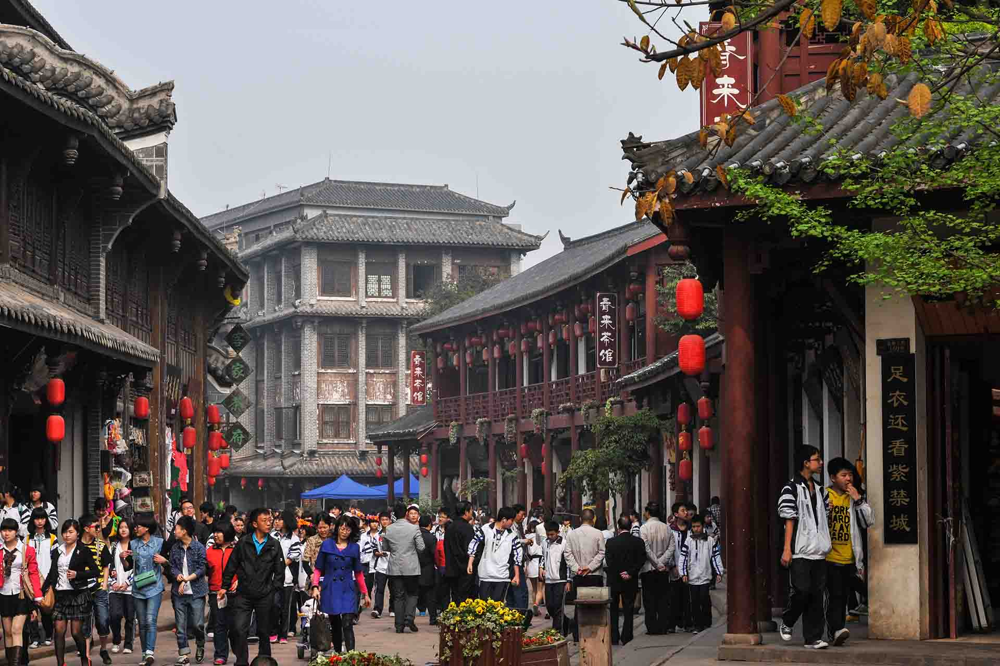

洛带古镇地处成都市龙泉驿区境内，是成都“东山五场”之一，被誉为“中国西部客家第一镇” [1-2] 。
洛带古镇是四川省打造“两湖一山”旅游区的重点景区、国家AAAA级旅游景区、全国首批重点小城镇、成都市重点保护镇、成都文化旅游发展优先镇、省级历史文化名镇、全国“亿万农民健身活动先进镇”。作为世界客属第二十届恳亲大会的核心分会场之一，洛带被世人称之为“世界的洛带、永远的客家”，“天下客家”的定位也得以确立。
洛带古镇位于龙泉镇北10公里，坐落在龙泉山脉中段的二峨山麓。建于三国蜀汉时期，传说因蜀汉后主刘禅的玉带落入镇旁的八角井中而得名,镇上居民中客家人有2万多人，占全镇人数的9成; 故有中国西部客家第一镇之称。